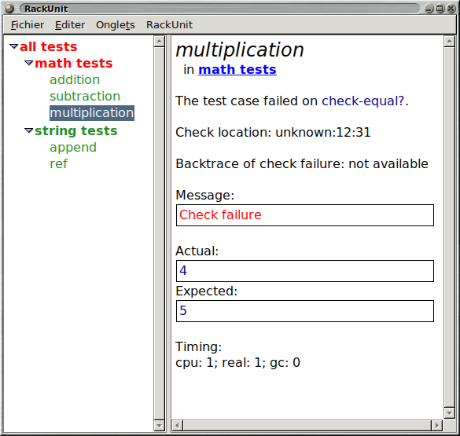

3 RackUnit API
| (require rackunit) | package： rackunit-lib |
3.1 Overview of RackUnit
There are three basic concepts in RackUnit:
A check is the basic unit of a test. As the name suggests, it checks whether some condition is true.
A test case is a group of checks that form one conceptual unit. If any check within the case fails, the entire case fails.
A test suite is a group of test cases and test suites that has a name.
3.2 Checks
Checks are the basic building block of RackUnit. A check checks some condition and always evaluates to (void). If the condition doesn’t hold, the check will report the failure using the current check-info stack (see current-check-handler for customizing how failures are handled).
Although checks are implemented as macros, which is necessary to grab source locations (see Custom Checks), they are conceptually functions (with the exception of check-match below). This means, for instance, checks always evaluate their arguments. You can use a check as a first class function, though this will affect the source location that the check grabs.
3.2.1 Basic Checks
The following are the basic checks RackUnit provides. You can create your own checks using define-check.
函数
v1 : any v2 : any message : (or/c string? #f) = #f (check-not-eq? v1 v2 [message]) → void? v1 : any v2 : any message : (or/c string? #f) = #f (check-eqv? v1 v2 [message]) → void? v1 : any v2 : any message : (or/c string? #f) = #f (check-not-eqv? v1 v2 [message]) → void? v1 : any v2 : any message : (or/c string? #f) = #f (check-equal? v1 v2 [message]) → void? v1 : any v2 : any message : (or/c string? #f) = #f (check-not-equal? v1 v2 [message]) → void? v1 : any v2 : any message : (or/c string? #f) = #f
For example, the following checks all fail:
> (check-eq? (list 1) (list 1) "allocated data not eq?")
--------------------
FAILURE
name: check-eq?
location: eval:3:0
message: "allocated data not eq?"
actual: '(1)
expected: '(1)
--------------------
> (check-not-eq? 1 1 "fixnums are eq?")
--------------------
FAILURE
name: check-not-eq?
location: eval:4:0
params: '(1 1)
message: "fixnums are eq?"
--------------------
> (check-eqv? 1 1.0 "not eqv?")
--------------------
FAILURE
name: check-eqv?
location: eval:5:0
message: "not eqv?"
actual: 1
expected: 1.0
--------------------
> (check-not-eqv? 1 1 "integers are eqv?")
--------------------
FAILURE
name: check-not-eqv?
location: eval:6:0
params: '(1 1)
message: "integers are eqv?"
--------------------
> (check-equal? 1 1.0 "not equal?")
--------------------
FAILURE
name: check-equal?
location: eval:7:0
message: "not equal?"
actual: 1
expected: 1.0
--------------------
> (check-not-equal? (list 1) (list 1) "equal?")
--------------------
FAILURE
name: check-not-equal?
location: eval:8:0
params: '((1) (1))
message: "equal?"
--------------------
函数
(check-pred pred v [message]) → void?
pred : (-> any any) v : any message : (or/c string? #f) = #f
> (check-pred string? "I work")
> (check-pred number? "I fail")
--------------------
FAILURE
name: check-pred
location: eval:10:0
params: '(#<procedure:number?> "I fail")
--------------------
For example, the following check passes:
> (check-= 1.0 1.01 0.02 "I work")
> (check-= 1.0 1.01 0.005 "I fail")
--------------------
FAILURE
name: check-=
location: eval:12:0
params: '(1.0 1.01 0.005)
message: "I fail"
--------------------
函数
(check-within v1 v2 epsilon [message]) → void?
v1 : any v2 : any epsilon : number? message : (or/c string? #f) = #f
For example, the following checks pass:
> (check-within (list 6 10) (list 6.02 9.99) 0.05) > (check-within (flvector 3.0 4.0 5.0) (flvector 3.01 4.01 5.014) 0.02) > (check-within (hash 'C 20 'F 68) (hash 'C 25 'F 77) 10)
> (check-within (list 6e+23 10.0) (list 6.02e+23 9.8) 0.05)
--------------------
FAILURE
name: check-within
location: eval:16:0
actual: '(6e+23 10.0)
expected: '(6.02e+23 9.8)
--------------------
> (check-within (hash 'C 18 'F 64) (hash 'C 25 'F 77) 10)
--------------------
FAILURE
name: check-within
location: eval:17:0
actual: '#hash((C . 18) (F . 64))
expected: '#hash((C . 25) (F . 77))
--------------------
添加于package rackunit-lib的1.10版本。
函数
(check-true v [message]) → void?
v : any message : (or/c string? #f) = #f (check-false v [message]) → void? v : any message : (or/c string? #f) = #f (check-not-false v [message]) → void? v : any message : (or/c string? #f) = #f
For example, the following checks all fail:
> (check-true 1)
--------------------
FAILURE
name: check-true
location: eval:18:0
params: '(1)
--------------------
> (check-false 1)
--------------------
FAILURE
name: check-false
location: eval:19:0
params: '(1)
--------------------
> (check-not-false #f)
--------------------
FAILURE
name: check-not-false
location: eval:20:0
params: '(#f)
--------------------
For example, the following checks succeed:
> (check-exn exn:fail? (lambda () (raise (make-exn:fail "Hi there" (current-continuation-marks)))))
> (check-exn exn:fail? (lambda () (error 'hi "there")))
The following check fails:
> (check-exn exn:fail? (lambda () (break-thread (current-thread))))
--------------------
ERROR
user break
--------------------
The following example is a common mistake. The call to error is not within a lambda, so it bypasses check-exn entirely.
; Forgot to wrap the expression in a thunk. Don't do this!
> (check-exn exn:fail? (error 'hi "there")) hi: there
> (check-not-exn (λ () 1)) > (check-not-exn (λ () (car '())))
--------------------
FAILURE
name: check-not-exn
location: eval:26:0
params: '(#<procedure>)
message: "Exception raised"
exception-message: "car: contract violation\n expected: pair?\n given: '()"
exception:
#(struct:exn:fail:contract "car: contract violation\n expected: pair?\n given: '()" #<continuation-mark-set>)
--------------------
> (check-not-exn (λ () (/ 1 0)) "don't divide by 0")
--------------------
FAILURE
name: check-not-exn
location: eval:27:0
params: '(#<procedure>)
message: "don't divide by 0"
exception-message: "/: division by zero"
exception:
#(struct:exn:fail:contract:divide-by-zero "/: division by zero" #<continuation-mark-set>)
--------------------
函数
(check-regexp-match regexp string) → void?
regexp : regexp? string : string?
For example, the following check succeeds:
> (check-regexp-match "a+bba" "aaaaaabba")
The following check fails:
> (check-regexp-match "a+bba" "aaaabbba")
--------------------
FAILURE
name: check-regexp-match
location: eval:29:0
params: '("a+bba" "aaaabbba")
--------------------
语法
(check-match v pattern)
(check-match v pattern pred)
> (check-match (list 1 2 3) (list _ _ 3))
This check fails to match:
> (check-match (list 1 2 3) (list _ _ 4))
--------------------
FAILURE
name: check-match
location: eval:31:0
actual: '(1 2 3)
expected: '(list _ _ 4)
--------------------
If pred is provided, it is evaluated with the bindings from the match pattern. If it produces #t, the entire check succeeds, otherwise it fails. For example, this use succeeds, binding x in the predicate:
> (check-match (list 1 (list 3)) (list x (list _)) (odd? x))
This check fails because the pred fails:
> (check-match 6 x (odd? x))
--------------------
FAILURE
name: check-match
location: eval:33:0
actual: 6
expected: 'x
--------------------
This check fails because of a failure to match:
> (check-match (list 1 2) (list x) (odd? x))
--------------------
FAILURE
name: check-match
location: eval:34:0
actual: '(1 2)
expected: '(list x)
--------------------
For example, the following check succeeds:
> (check < 2 3)
The following check fails:
> (check memq 'pine '(apple orange pear))
--------------------
FAILURE
name: check
location: eval:36:0
params: '(#<procedure:memq> pine (apple orange pear))
--------------------
3.2.2 Augmenting Information on Check Failure
When a check fails, it may add information about the failure to RackUnit’s check-info stack. Additional information can be stored by using the with-check-info* function, and the with-check-info macro.
struct
(struct check-info (name value) #:extra-constructor-name make-check-info #:transparent) name : symbol? value : any
修改于package rackunit-lib的1.6版本：Changed from opaque to transparent
struct
(struct string-info (value) #:transparent) value : string?
> (define-check (string-info-check) (with-check-info (['value "hello world"] ['message (string-info "hello world")]) (fail-check))) > (string-info-check)
--------------------
FAILURE
name: string-info-check
location: eval:38:0
params: '()
value: "hello world"
message: hello world
--------------------
添加于package rackunit-lib的1.2版本。
struct
(struct nested-info (values) #:transparent) values : (listof check-info?)
> (define-check (nested-info-check) (define infos (list (make-check-info 'foo "foo") (make-check-info 'bar "bar"))) (with-check-info (['nested (nested-info infos)]) (fail-check))) > (nested-info-check)
--------------------
FAILURE
name: nested-info-check
location: eval:40:0
params: '()
nested:
foo: "foo"
bar: "bar"
--------------------
添加于package rackunit-lib的1.7版本。
struct
(struct dynamic-info (proc) #:transparent) proc : (-> any/c)
> (with-check-info (['current-dir (dynamic-info current-directory)]) (check-equal? 1 2) (parameterize ([current-directory (find-system-path 'temp-dir)]) (check-equal? 1 2)))
--------------------
FAILURE
current-dir:
#<path:/home/cat/Source/Racket-zh/racket/racket/share/pkgs/rackunit-doc/rackunit/>
name: check-equal?
location: eval:41:0
actual: 1
expected: 2
--------------------
--------------------
FAILURE
current-dir: #<path:/var/tmp/>
name: check-equal?
location: eval:41:0
actual: 1
expected: 2
--------------------
The value returned by proc may itself be a special formatting value such as nested-info (or even another dynamic-info), in which case that value is rendered as it would be if it had not been wrapped in dynamic-info.
> (define current-foo (make-parameter #f))
> (with-check-info (['foo (dynamic-info current-foo)]) (check-equal? 1 2) (parameterize ([current-foo (nested-info (list (make-check-info 'nested 'foo)))]) (check-equal? 1 2)))
--------------------
FAILURE
foo: #f
name: check-equal?
location: eval:43:0
actual: 1
expected: 2
--------------------
--------------------
FAILURE
foo:
nested: foo
name: check-equal?
location: eval:43:0
actual: 1
expected: 2
--------------------
添加于package rackunit-lib的1.9版本。
The are several predefined functions that create check-info structures with predefined names. This avoids misspelling errors:
函数
(make-check-name name) → check-info?
name : string? (make-check-params params) → check-info? params : (listof any) (make-check-location loc) → check-info?
loc :
(list/c any (or/c number? #f) (or/c number? #f) (or/c number? #f) (or/c number? #f)) (make-check-expression msg) → check-info? msg : any (make-check-message msg) → check-info? msg : string? (make-check-actual param) → check-info? param : any (make-check-expected param) → check-info? param : any
函数
(with-check-info* info thunk) → any
info : (listof check-info?) thunk : (-> any)
> (with-check-info* (list (make-check-info 'time (current-seconds))) (lambda () (check = 1 2)))
--------------------
FAILURE
time: 1536501450
name: check
location: eval:44:0
params: '(#<procedure:=> 1 2)
--------------------
When this check fails the message
time: <current-seconds-at-time-of-running-check> |
is printed along with the usual information on an check failure.
语法
(with-check-info ((name val) ...) body ...)
> (for-each (lambda (elt) (with-check-info (('current-element elt)) (check-pred odd? elt))) (list 1 3 5 7 8))
--------------------
FAILURE
current-element: 8
name: check-pred
location: eval:45:0
params: '(#<procedure:odd?> 8)
--------------------
When this test fails the message
current-element: 8 |
is displayed along with the usual information on an check failure.
函数
(with-default-check-info* info thunk) → any
info : (listof check-info?) thunk : (-> any)
> (with-default-check-info* (list (make-check-name 'first-name)) (λ () (with-default-check-info* (list (make-check-name 'last-name)) (λ () (check-true #false)))))
--------------------
FAILURE
name: first-name
location: eval:46:0
params: '(#f)
--------------------
The error message above should include 'first-name but not 'last-name.
3.2.3 Custom Checks
Custom checks can be defined using define-check and its variants. To effectively use these macros it is useful to understand a few details about a check’s evaluation model.
First, a check should be considered a function, even though most uses are actually macros. In particular, checks always evaluate their arguments exactly once before executing any expressions in the body of the checks. Hence if you wish to write checks that evaluate user defined code that code must be wrapped in a thunk (a function of no arguments) by the user. The predefined check-exn is an example of this type of check.
Second, checks add information to the check-info stack: an internal list of check-info structures that RackUnit interprets to build error messages. The basic checks treat the stack as a source of optional arguments; if the stack is missing some information, then the check may supply a default value. For example, check-equal? adds a default source location if the check-info stack does not contain a check-info with the name 'location (see make-check-location).
语法
(define-simple-check (name param ...) body ...)
Simple checks cannot report extra information by using with-check-info inside their body.
For example, the following code defines a check check-odd?
> (define-simple-check (check-odd? number) (odd? number))
We can use these checks in the usual way:
> (check-odd? 3) > (check-odd? 2)
--------------------
FAILURE
name: check-odd?
location: eval:49:0
params: '(2)
--------------------
语法
(define-binary-check (name pred actual expected))
(define-binary-check (name actual expected) body ...)
Here’s the first form, where we use a predefined predicate to construct a binary check:
> (define-binary-check (check-char=? char=? actual expected))
In use:
> (check-char=? (read-char (open-input-string "a")) #\a)
If the expression is more complicated, the second form should be used. For example, below we define a binary check that tests whether a number is within 0.01 of the expected value:
> (define-binary-check (check-in-tolerance actual expected) (< (abs (- actual expected)) 0.01))
语法
(define-check (name param ...) body ...)
> (define-check (check-even? number) (unless (even? number) (fail-check))) > (check-even? 0) > (check-even? 1)
--------------------
FAILURE
name: check-even?
location: eval:55:0
params: '(1)
--------------------
Checks defined with define-check add the source location and source syntax at their use-site to the check-info stack, unless the stack already contains values for the keys 'location and 'expression.
> (check-equal? 0 1)
--------------------
FAILURE
name: check-equal?
location: eval:56:0
actual: 0
expected: 1
--------------------
> (with-check-info* (list (make-check-location (list 'custom 6 1 #f #f))) (λ () (check-equal? 0 1)))
--------------------
FAILURE
location: custom:6:1
name: check-equal?
actual: 0
expected: 1
--------------------
修改于package rackunit-lib的1.9版本：Documented the protocol for adding 'location and 'expression information.
函数
(fail-check message) → void?
message : string?
3.3 Compound Testing Forms
3.3.1 Test Cases
As programs increase in complexity the unit of testing grows beyond a single check. For example, it may be the case that if one check fails it doesn’t make sense to run another. To solve this problem compound testing forms can be used to group expressions. If any expression in a group fails (by raising an exception) the remaining expressions will not be evaluated.
语法
(test-begin expr ...)
For example, in the following code the world is not destroyed as the preceding check fails:
(test-begin (check-eq? 'a 'b) ; This line won't be run (destroy-the-world))
语法
(test-case name body ...+)
Here’s the above example rewritten to use test-case so the test can be named.
(test-case "Example test" (check-eq? 'a 'b) ; This line won't be run (destroy-the-world))
函数
(test-case? obj) → boolean?
obj : any
3.3.1.1 Shortcuts for Defining Test Cases
函数
(test-check name operator v1 v2) → void?
name : string? operator : (-> any/c any/c any/c) v1 : any/c v2 : any/c (test-pred name pred v) → void? name : string? pred : (-> any/c any/c) v : any/c (test-equal? name v1 v2) → (void?) name : string? v1 : any/c v2 : any/c (test-eq? name v1 v2) → void? name : string? v1 : any/c v2 : any/c (test-eqv? name v1 v2) → void? name : string? v1 : any/c v2 : any/c (test-= name v1 v2 epsilon) → void? name : string? v1 : real? v2 : real? epsilon : real? (test-true name v) → void? name : string? v : any/c (test-false name v) → void? name : string? v : any/c (test-not-false name v) → void? name : string? v : any/c (test-exn name pred thunk) → void? name : string? pred : (or/c (-> any any/c) regexp?) thunk : (-> any) (test-not-exn name thunk) → void? name : string? thunk : (-> any)
(test-equal? "Fruit test" "apple" "pear")
(test-case "Fruit test" (check-equal? "apple" "pear"))
3.3.2 Test Suites
Test cases can themselves be grouped into test suites. A test suite can contain both test cases and test suites. Unlike a check or test case, a test suite is not immediately run. Instead use one of the functions described in User Interfaces or Programmatically Running Tests and Inspecting Results.
语法
(test-suite name-expr maybe-before maybe-after test ...)
maybe-before =
| #:before before-thunk maybe-after =
| #:after after-thunk
name-expr : string?
The before-thunk and after-thunk are optional thunks (functions with no argument). They are run before and after the tests are run, respectively.
Unlike a check or test case, a test suite is not immediately run. Instead use one of the functions described in User Interfaces or Programmatically Running Tests and Inspecting Results.
For example, here is a test suite that displays Before before any tests are run, and After when the tests have finished.
(test-suite "An example suite" #:before (lambda () (display "Before")) #:after (lambda () (display "After")) (test-case "An example test" (check-eq? 1 1)) (test-suite "A nested test suite" (test-case "Another test" (check < 1 2))))
函数
(make-test-suite name tests [ #:before before-thunk #:after after-thunk]) → test-suite? name : string? tests : (listof (or/c test-case? test-suite?)) before-thunk : (-> any) = void after-thunk : (-> any) = void
函数
(test-suite? obj) → boolean?
obj : any
3.3.2.1 Utilities for Defining Test Suites
There are some macros that simplify the common cases of defining test suites:
语法
(define-test-suite name test ...)
For example, this code creates a binding for the name example-suite as well as creating a test suite with the name "example-suite":
(define-test-suite example-suite (check = 1 1))
语法
(define/provide-test-suite name test ...)
3.4 Test Control Flow
The before, after, and around macros allow you to specify code that is always run before, after, or around expressions in a test case.
语法
(before before-expr expr-1 expr-2 ...)
语法
(after expr-1 expr-2 ... after-expr)
语法
(around before-expr expr-1 expr-2 ... after-expr)
Example:
The test below checks that the file test.dat contains the string "foo". The before action writes to this file. The after action deletes it.
(around (with-output-to-file "test.dat" (lambda () (write "foo"))) (with-input-from-file "test.dat" (lambda () (check-equal? "foo" (read)))) (delete-file "test.dat"))
语法
(delay-test test1 test2 ...)
3.5 Miscellaneous Utilities
The require/expose macro allows you to access bindings that a module does not provide. It is useful for testing the private functions of modules.
语法
(require/expose module (id ...))
Note that require/expose can be a bit fragile, especially when mixed with compiled code. Use at your own risk!
This example gets make-failure-test, which is defined in a RackUnit test:
(require/expose rackunit/private/check-test (make-failure-test))
函数
(dynamic-require/expose mod name) → any
mod :
(or/c module-path? module-path-index? resolved-module-path?) name : symbol?
3.6 User Interfaces
RackUnit provides a textual and a graphical user interface
3.6.1 Textual User Interface
| (require rackunit/text-ui) | package： rackunit-lib |
The textual UI is in the rackunit/text-ui module. It is run via the run-tests function.
函数
(run-tests test [verbosity]) → natural-number/c
test : (or/c test-case? test-suite?) verbosity : (symbols 'quiet 'normal 'verbose) = 'normal
The optional verbosity is one of 'quiet, 'normal, or 'verbose. Quiet output displays only the number of successes, failures, and errors. Normal reporting suppresses some extraneous check information (such as the expression). Verbose reports all information.
run-tests returns the number of unsuccessful tests.
3.6.2 Graphical User Interface
| (require rackunit/gui) | package： rackunit-gui |
RackUnit also provides a GUI test runner, available from the rackunit/gui module.
函数
test : (or/c test-case? test-suite?) wait? : boolean? = #f
When wait? is true, test/gui does not return until the test runner window has been closed.
Given the following program, the RackUnit GUI will look as shown below:
#lang racket (require rackunit rackunit/gui) (test/gui (test-suite "all tests" (test-suite "math tests" (test-case "addition" (check-equal? (+ 1 1) 2)) (test-case "subtraction" (check-equal? (- 0 0) 0)) (test-case "multiplication" (check-equal? (* 2 2) 5))) (test-suite "string tests" (test-case "append" (check-equal? (string-append "a" "b") "ab")) (test-case "ref" (check-equal? (string-ref "abc" 1) #\b)))))

函数
(make-gui-runner) → (-> (or/c test-case? test-suite?) ... any)